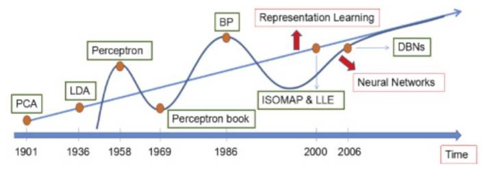
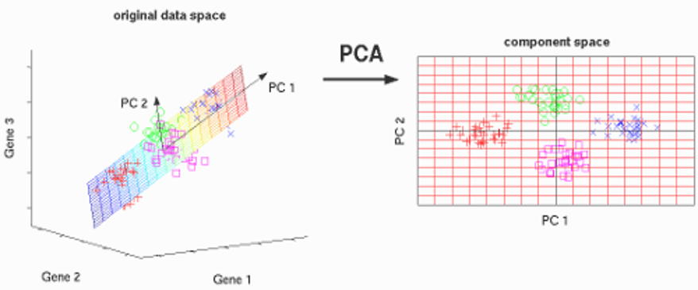
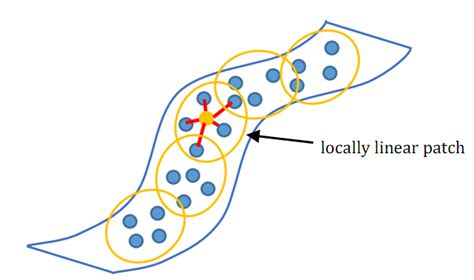
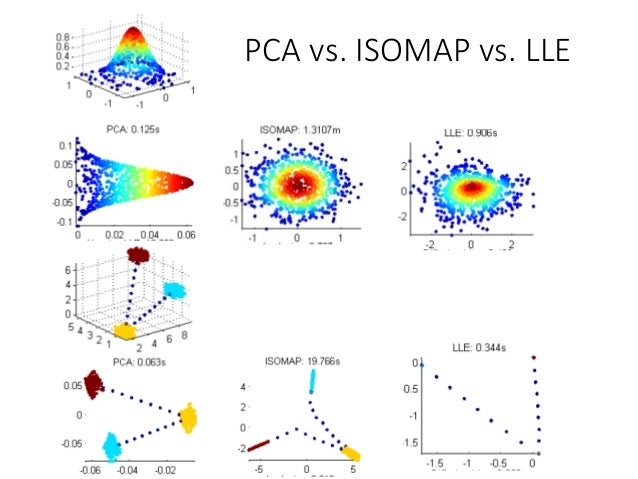
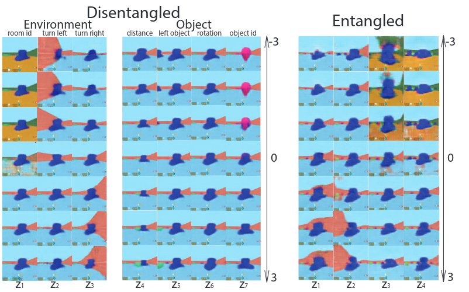
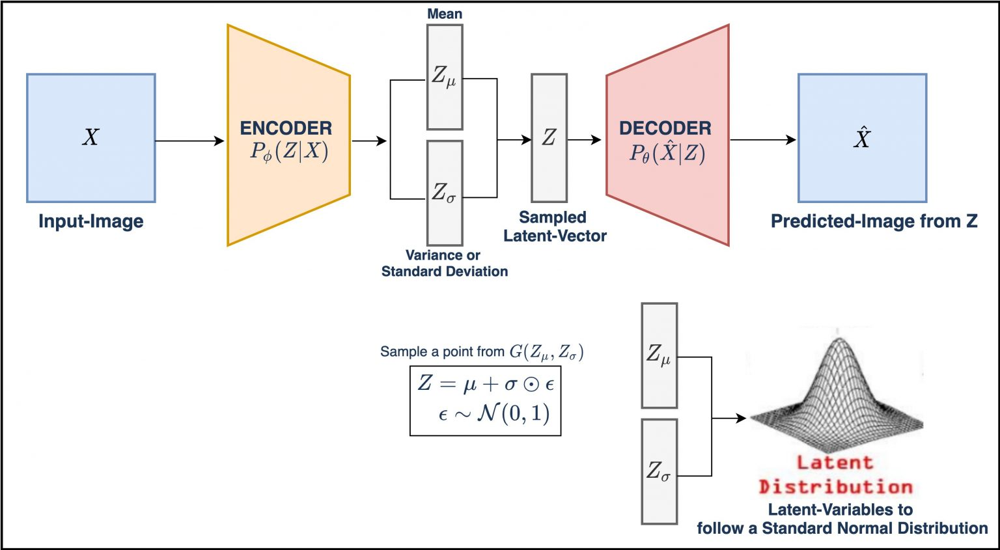

Bachelor Thesis Dimensionality Reduction
Table of Contents
- 1. Overview
- 2. Lines of Thoughts
- 2.1. Dimensionality Reduction
- 2.2. Autoencoder
- 2.3. PCA
- 2.4. LDA
- 2.5. LLE
- 2.6. Isomap
- 2.7. Intermezzo
- 2.8. MDPs Generalization
- 2.9. Disentagled Representations
- 2.10. Variational inference
- 2.11. Variational Autoencoder
- 2.12. Adversarial Autoencoder
- 2.13. β-VAE
- 2.14. Info VAE
- 2.15. INPROGRESS Random thought
- 3. Ideas for Hyperparameters
- 4. ML Pipeline
- 5. Autoencoders
- 6. Papers
- 6.1. Common knowledge resources
- 6.2. General papers:
- 6.3. Autoencoders:
- 6.3.1. Recent advances in Autoencoder-based Representation Learning
- 6.3.2. β-VAE: Learning basic visual concepts with a constrained variational framework
- 6.3.3. Adversarial Variational Bayes: Unifying Variational Autoencoders and Generative Adversarial Networks
- 6.3.4. DISCARDED Generalized Autoencoder: A Neural Network Framework for Dimensionality Reduction
- 6.3.5. Tutorial on Variational Autoencoders
- 6.3.6. Auto-Encoding Variational Bayes
- 6.3.7. InfoVAE: Balancing Learning and Inference in Variational Autoencoders
- 6.3.8. Adversarial Autoencoders
- 6.3.9. Learning representations by maximizing mutual information in variational autoencoders
- 6.3.10. HOLD The information autoencoding family: A lagrangian Perspective on latent variable generative models
- 6.3.11. HOLD CausalVAE: Disentangled Representation Learning via Neural Structural Causal Models
- 6.3.12. Life-Long Disentangled representation learning with Cross-domain Latent Homologies
- 6.3.13. TODO Unsupervised model selection for variational disentangled representation learning
- 6.4. Dimensionality reduction:
- 6.4.1. Auto-encoder based dimensionality reduction
- 6.4.2. Dimensionality Reduction of SDSS Spectra with Variational Autoencoders
- 6.4.3. DISCARDED Dimensionality reduction for EEG-based sleep stage detection: comparison of autoencoders, principal component analysis and factor analysis
- 6.4.4. A deep adversarial variational autoencoder model for dimensionality reduction in single-cell RNA sequencing analysis
- 6.5. Disentagled representation:
- 6.5.1. Understanding disentagling in β-VAE
- 6.5.2. Towards a Definition of Disentangled Representations
- 6.5.3. Are Disentagled representations helpful for Abstract Visual Reasoning?
- 6.5.4. DISCARDED On the binding Problem in Artificial Neural Networks
- 6.5.5. Disentangling Disentanglement in Variational Autoencoders
- 6.5.6. TODO Unsupervised State Representation Learning in Atari
- 6.6. Continual Learning:
- 6.6.1. TODO Generative Models from the perspective of Continual Learning
- 6.6.2. TODO Embracing Change: Continual Learning in Deep Neural Networks
- 6.6.3. TODO Continual learning for robotics: Definition,framework,learning strategies, opportunities and challenges
- 6.6.4. TODO Continual Unsupervised Representation Learning
- 6.7. AE + RL:
- 6.7.1. VARL: a variational autoencoder‑based reinforcement learning Framework for vehicle routing problems
- 6.7.2. Robot skill learning in latent space of a deep autoencoder neural network
- 6.7.3. AutoEncoder-based Safe Reinforcement Learning for Power Augmentation in a Lower-limb Exoskeleton
- 6.7.4. The Dreaming Variational Autoencoder for Reinforcement Learning Environments
- 6.7.5. Deep Variational Reinforcement Learning for POMDPs
- 6.7.6. On the use of Deep Autoencoders for Efficient Embedded Reinforcement Learning
- 6.7.7. DARLA: Improving Zero-Shot Transfer in Reinforcement Learning
- 6.7.8. TODO Explainability in deep reinforcement learning
- 6.8. Old ideas
- 6.9. TODO Old work
- 6.9.1. Level ground walking for healthy and transfemoral amputee models. Deep reinforcement learning with phasic policy gradient optimization
- 6.9.2. Deep reinforcement learning for physics-based musculoskeletal model of a transfemoral amputee with a prothesis walking on uneven terrain
- 6.9.3. Deep reinforcement learning for physics-based musculoskeletal simulations of healthy subjects and transfemoral protheses' users during normal walking
- 6.9.4. Learning to walk: Phasic Policy Gradient for healthy and impaired musculoskeletal models
- 6.9.5. Evaluating Deep Reinforcement Learning Algorithms for Physics-Based Musculoskeletal Transfemoral Model with a Prosthetic Leg Performing Ground-Level Walking
- 6.9.6. Deep Reinforcement Learning for Physics-based Musculoskeletal Simulations of Transfemoral Prosthesis' Users during the Transition between Normal Walking and Stairs Ascending
- 6.9.7. Testing For Generality Of A Proximal Policy Optimiser For Advanced Human Locomotion Beyond Walking
- 7. Presentations
- 8. INPROGRESS Future Research
- 9. INPROGRESS Code
- 10. Contacts
- 11. Todos
- 11.1. Code
- 11.1.1. DONE Vanilla Autoencoder
- 11.1.2. DONE VAE
- 11.1.3. DONE AVB
- 11.1.4. DONE logging
- 11.1.5. DONE tensorboard
- 11.1.6. DONE data loader
- 11.1.7. DONE cross validation
- 11.1.8. DONE parse config
- 11.1.9. DONE writer
- 11.1.10. DONE validate with different loss
- 11.1.11. DONE Create config parser module
- 11.1.12. HOLD Dict -> nametuple
- 11.1.13. INPROGRESS Graph module
- 11.1.14. HOLD Collect Data from simulation
- 11.2. Paper
- 11.1. Code
1 Overview
1.1 Project scope
The project aim to build an autoencoder for dimensionality reduction. In particular, this will be used to hopefully enhance the performance of a DRL algorithm for opensim-rl simulation and to enhance the ability to generalize in different environment. In this project different type of Autoencoders will be tested.
1.2 Index:
1.2.1 Lines of Thoughts
A kinda of overview on what the thesis is about (e.i. Autoencoders and dimensionality reduction)
1.2.2 Papers
A list of all the background literature found. For each of paper there is a short description of the aims and the results.
1.2.3 Autoencoders
Contains a list of implemented and not autoencoders
1.2.4 Ideas for Hyperparameters
Contains some ideas for the hyperparameters fitting and some maybe clever ideas
1.2.5 Future Research
Contains some ideas for future research, and on ideas that goes beyond the thesis
1.2.6 Code
Contains the git repo and the link for the code documentation
1.2.7 Todos
Contains a list of different type of Todo
1.2.8 Presentations
Contains all the presentations done or in progress
1.2.9 Contacts
Self explanatory
2 Lines of Thoughts
2.1 Dimensionality Reduction
The concept of dimensionality reduction is quite straightforward. The idea is to reduce the number of dimensions/features while retaining maximum information. Even though the definition is quite simple, being able to perform such transformations is not trivial.
Ideally, the reasons for performing such processes are:(Note this list is not complete but gives a general overview)
- Avoid the curse of dimensionality
- Reducing potential overfitting of further processing
- Reducing computation time of further processing
- Reducing storage space
- Plotting
- Noise removal
- Removing Correlated features
- Removing redundant features
Several methods can perform this transformation. They are usually divided into 2 categories:
- Linear methods
- Non-Linear methods
Of course, there can also be other types of categorizations (e.g. feature selection, feature extraction, Neural, Manifold based, Local methods etc.) In the following sections, we will present roughly 2 approaches per category.

Figure 1: The Dimensionality reduction methods timeline
NOTE we will only focus on unsupervised methods since they are the most suitable for real-life situations where having labelled data is hard and expensive.
2.2 Autoencoder
An Autoencoder is a special network architecture which approximate two different function encode and decode such as: \[decode(encode(\hat{X})) = \hat{X}\]
Note most of the the time is not an = but an ≈
The network is therefore composed of two different sub-networks. An Encoder which can be defined as: \[encode \rightarrow \mathbb{R}^n \times \mathbb{R}^m \] And a Decoder which can be defined as: \[decode \rightarrow \mathbb{R}^m \times \mathbb{R}^n \]
There are two constraints to these two functions. The first one is that decode must be approximately the inverse of the encode1. The second one is that \[ m << n \]
NOTE when the second constraint is satisfied, the autoencoder is considered an under-complete autoencoder. However, every time we will use the autoencoder word we will refer to under-complete autoencoder.
The second constraint is an architectural one, meanwhile the first one is a functional constraint that will be achieved after the network is trained.
The error function is, therefore, a reconstruction error or distance measure between the input and output.
The layer between the Encoder and the Decoder express what is usually known as Latent space which dimensionality is \(\mathbb{R}^m\).
We will from now on refer to the Latent space as \(\hat{z}\). For clarity we can rewrite the above formulas as: \[encode(\hat{X}) = \hat{z}\] \[decode(\hat{z}) \approx \hat{X}\]
As Wang stated 2
Auto-encoder can be seen as a way to transform representation.
2.3 PCA
Principal Component Analysis(PCA) is a linear technique. It is probably one of the most used methods because of its reliability and explainability. Conceptually, PCA find the directions of maximum variance in the data and project it into a new space with fewer dimensions than the data
The crucial point of PCA is to find the Principal Component of the data which are therefore completely uncorrelated while maintaining most of the variability of the data. Note The Principal Components are selected based on the explained variance.

Figure 2: PCA visualization
2.3.1 Assumptions/downfalls
- Linear dimensions (i.e. the variables in the dataset must combine in a linear manner)
- approximately normally distributed data
2.4 LDA
Linear Discriminant Analysis (LDA) is a linear method. In a nutshell, we want to find a new subspace to project the data in order to maximize classes separability.
The idea to measure such separability is to maximize the difference between the mean of each class while minimizing the spread within the class.
The main disadvantage is that LDA have good performance only if the dataset is Normally distributed.

Figure 3: LDA vs PCA
2.4.1 Assumptions/downfalls
- Normally distributed data
- Linear combination of features
2.5 LLE
Locally Linear Embedding (LLE) is a non-linear methods. Conceptually it aims to discover the underline non-linear structure of the data set while preserving the distance within local neighborhoods.

Figure 4: LLE visualization
This techinique is a 3 steps procedure:
- Uses a KNN approach to find the k nearest neighbors of every data point.
- Approximates each data vecotr as a weighted linear combination of its k-nearest neighbors. (Note all data point which are not in a particular neighborhoods have 0 weight)
- Computes the wieghts that best reconstruct the vectors from its neighbors
2.5.1 Assumptions/downfalls
- Euclidean distance to compute k-nearest neighbors
- Quite sensible to outliers and noise
2.6 Isomap
Isometric Mapping (Isomap) is non-linear method which belong to the category of Manifold Learning.
Ideally, it is quite similar to LLE, however, the crucial objective of this mapping is to maintain a geodesic distance between two points.
Note Geodesic is the shortest path between two points on the surface itself. This is why Isomap is considered a Manifold Learning method
This technique is also defined by a 3 steps process:
- Construct a neighbourhoods graph (equivalent to the first step of LLE)
- Compute the shortest path between points (using either Dijkstra's or Floyd-Warshall algorithm)
- Construct a d-dimensional embedding by a partial eigenvalue decomposition (i.e. taking the d largest eigenvalues of the kernel)

Figure 5: Isomap vs PCA vs LLE
2.6.1 Assumptions/downfalls
- Computational intensive
- Euclidean distance for k-nearest neighbors
2.7 Intermezzo
So, we have rapidly been through classical and not dimensionality reduction techniques. The main focus of this thesis, though, is to perform what is usually referred to as Representation Learning.
Of course, it is quite trivial to see how Representation Learning and Dimensionality reduction are strictly related.
Indeed, a representation usually has fewer dimensions than the original input. A good representation also should maintain the most important information/features of the input space.
Therefore, the two branches are strictly related. However, it is important to notice that a good Dimensionality reduction method does not always produce a good representation (by good we mean that it has all the important features needed to learn a mapping between states and actions)
For this reason, this thesis will mainly focus on Autoencoders technique to perform dimensionality reduction (and/or Representation learning) since they give a good tradeoff between process flexibility and accuracy. (for reference: 2, 3, 4)
It is also crucial to notice that the literature indicate that usually Autoencoders-based latent space (or embeddings) outperforms other dimensionality reduction technique when the latent space is used as input in an RL-based framework (for reference : 5 , 6 , 7 , 8 , 9 , 10)
Before jumping into more advanced Autoencoders-based technique we will briefly introduce MDPs Generalization. This is another important point in the thesis since, the two main objectives of constructing low dimensional latent space for an RL algorithm are:
- Faster and more stable convergence
- Better Generalization property
The first point seems quite intuitive. Having a low dimensional state-space should result in a faster and more stable convergence since the RL algorithm needs to learn a mapping from a low dimensional state-space to action which should be easier than learning a mapping from a high dimensional state space to action.
Another interesting point made in 5 is that all Deep Reinforcement Learning (DRL) algorithm implicitly learns a first mapping from high dimensional state space to low dimensional state space and then the maps this low dimensional state space to action. Therefore, by performing dimensionality reduction we take away the concern of learning a good representation from the DRL algorithm which therefore will only focus on learning a mapping from state to action directly.
Other valuable properties of doing such a process are described in the next chapter.
2.8 MDPs Generalization
For formal description of this concept look up at 5 (section 2.2)
The idea though is quite intuitive. Let us assume that we have a
natural world from which we can sample MDPs. The crucial
characteristic of these MDPs is that they all do have the same
action space but they have differences between the state spaces.
However, since we are sampling these MDPs from the same natural
world these state spaces must have some structural similarity
(i.e. isomorphisms)
Therefore, to have good generalization property, we need
to construct a good representation that aims to represent the
state space of the natural world. To do so, we cannot
leave this concern to a DRL method for the following reason.
Since DRL is maximizing some objectives, it makes sense that the best representation is the most MDP-entangled one and therefore is the one that is guided by the learning process to learn.5 Therefore, if we do not move this concern outside the DRL we will have poor generalization ability, particularly without extensive fine-tuning.
Here, Dimensionality reduction methods such as Autoencoders comes to the rescue. Since they do not maximize the same objective as the DRL we can guide the process of learning a representation as we please. Moreover, we will discover in the next chapters how it is crucial to aims for disentangled representation.
The main downfall of moving the concern of learning a representation outside DRL is that we need to be careful of what kind of dataset we use to train the autoencoders. It is crucial that the dataset has big variability and covers most of the "visible" state space. This is because a lot of autoencoders architecture have weird/undefined behaviour in point of the space not explored during training which is not desirable.
Other potential downfalls are:
- Increase overall computation time (not always true though)
- Risk of losing important information for the DRL algorithm
- Non-trivial definition of AE-hyperparameters
Since usually the AE objective is centred on the reconstruction error it is not trivial to focus on learning useful representations as opposed to learning representations which are based on the ability of the decoder to achieve better reconstruction errors. Therefore, a tradeoff must be made to achieve useful representations for RL. We will see in future sections how different AE architectures deal with this tradeoff.
2.9 Disentagled Representations
This is a big topic in current AI research 11 (6th big challenge)
In the literature is not entirely clear what we mean when we talk about disentangled representations. However, some research and effort was made to have a formal definition 12 It seems, following their12 definition, that the concept of disentangled is quite similar to the concept of symmetry in physics. Physics, indeed, can be seen as an in-depth study of symmetries (see More is different from P.W.Anderson in Science which stated "it is only slightly overstating the case to say that physics is the study of symmetry")
This is quite important because, given this point of view, it is easier to define formally (i.e. mathematically) what are the properties of disentangled representations.
As stated in 12
Intuitively. we define a vector representation as disentangled if it can be decomposed into a number of subspaces, each one of which is compatible with, and can be transformed independently by a unique symmetry transformation
The paper12, then goes towards defining more formally this intuition using group theory, and this concept of symmetries.
Of course, this is one point of view on disentangled representations, there are different ones, however, this is to the best of our knowledge the best formal attempt to define it.
Another important point is that this "new" definition tries to put together all the different approaches/points of view that were present in the literature at that time. The main 3 characteristics that the authors identify are: modularity, compactness and explicitness. Directly quoting from 12:
- Modularity "measures whether a single latent dimension encodes no more than a single data generative factor"
- Compactness "measures whether each data generative factor is encoded by a single lantent dimension"
- Explicitness "measures whether the values of all of the data generative factors can be decoded from the representation using a linear transformation"
Not all of them are explicitly required to have a disentangled representation. Particularly the explicitness characteristic, since linearity is not required to have a disentangled representation (given the definition in 12)

Figure 6: Comparison of entangled vs disentangled representation
So now that we have a general overview of what we mean when we talk about disentangled representation, we can move on in understanding whether having such a representation is useful or at least is better than having a "normal" representation (i.e. without forcing any of the properties aforementioned)
Understanding whether it is useful having such a representation is also, not a trivial task and the literature is not clear on it. Most papers, claims that having such a thing is useful for three main reasons 13:
- more sample-efficient
- less sensitive to nuisance variables
- better in terms of generalization
This has been shown to be experimentally correct13, however, from a formal point of view, it is not clear why this is the case.
That is another motivation for conducting this thesis on disentangled representation to see whether these findings translate to harder and more complex settings.
Now we will proceed to show the different architectures that will be used in the thesis and we will justify the decision on each one.
2.9.1 Mathematical Background and explaination of Disentangled representations
From a mathematical point of view the definition of disentangled representation is based on group theory and group representation theory(all the mathematical theory in this paragraph was summarised from 12)
So first of all let us introduce the basic concepts of group theory.
A group is defined by a tuple \((\mathcal{G},\circ)\).
\(\mathcal{G}\) is a set, \(\circ\) is defined as following: \[\circ : \mathcal{G} \times \mathcal{G} \rightarrow \mathcal{G}\]
In order for the tuple to be consider a group the binary operator \(\circ\) must have the following properties:
- Associativity \[\forall x,y,z \in \mathcal{G} : x \circ (y \circ z) = (x \circ y) \circ z\]
- Identity \[\exists e \in \mathcal{G}, \forall x \in \mathcal{G} : e \circ x = x \circ e = x \]
- Inverse \[\forall x \in \mathcal {G},\exists x^{-1} \in \mathcal{G} : x \circ x^{-1} = x^{-1}\circ x = e\]
If the tuple has these properties then it is considered a group.
Now let us define what a group's action is:
Given a tuple \((\mathcal{G},\circ)\) a group's action is a binary
function such that
\[\cdot : \mathcal{G} \times \mathcal{X} \rightarrow \mathcal{X}\]
With the following properties:
\[e \cdot x = x \ \ \ \ \forall x \in \mathcal{X}\]
\[(g \cdot h) \cdot x = g \cdot (h \cdot x) \ \ \ \ \forall g,h \in
\mathcal{G},x \in \mathcal {X}\]
\(\mathcal{X}\) can be any structured space (e.g. topological space, vector space etc.) In the case \(\mathcal{X}\) is a vector space we have the specialization of the above properties as: \[g(x + y) = gx + gy \ \ \ \ \forall g \in \mathcal{G},\forall x,y \in \mathcal{X}\] \[g(\lambda x) = \lambda (gx) \ \ \ \ \ \forall g \in \mathcal {G},\lambda \in \mathbb{R}, x \in \mathcal {X}\]
So now that we have the basic tools, let us first define what a Disentangled group of action is.
\[\cdot: \mathcal {G} \times \mathcal {X} \rightarrow \mathcal{X}\]
a group's action is disentangled with respect to a particular
decomposition \(\mathcal{G} = \mathcal{G_1} \times \mathcal{G_2}\)
if exists \(\mathcal{X} = \mathcal{X_1} \times \mathcal{X_2}\) and
subactions \(\cdot_i = \mathcal{G_i} \times \mathcal{X_i} =
\mathcal{X_i}\) where \(i \in \{1,2\}\) such that:
\[(g_1,g_2)\cdot(v_1,v_2) = (g_1 \cdot_1 v_1, g_2 \cdot v_2)\]
The important thing to notice here is that we are simply saying that
each subaction \(\cdot_i\) modified the respective \(\mathcal{X_i}\) but
do not modify other \(\mathcal{X}\) so it is invariant to the other
\(\mathcal{X}\)
Final note, if \(\mathcal{X}\) has an additional structure we would like
the subaction to preserve such structure. So for example if \(\cdot\) is
linear we want \(\cdot_i\) to be linear too.
So now we can see what a disentangled representation is with respect to this framework.
Let us first introduce some terminology:
\(\mathcal{W}\) is a set of world-state. There exists a generative
process such that \(b:\mathcal{W} \rightarrow \mathcal{O}\) where
\(\mathcal{O}\) are the observations. Then, there exists an inference
process such that \(h: \mathcal{O} \times \mathcal{Z}\) where
\(\mathcal{Z}\) is the agent representation. We will assume that
\(\mathcal{Z}\) is a vector space. So now with function composition we
can say that exists an \(f\) such that \(f:\mathcal{W} \rightarrow
\mathcal{Z}\).
Now lets say that there exists a group's of action \(\mathcal{G}\) such
that \(\cdot : \mathcal{G} \times \mathcal{W} \rightarrow \mathcal{W}\)
which describes the symmetries present in \(\mathcal{W}\). We would like
to find another group's action such that it maintains these symmetries
in \(\mathcal{Z}\)
and it is defined as following: \(\cdot' : \mathcal{G} \times
\mathcal{Z} \rightarrow \mathcal{Z}\)
Such group's action will exists if and only if:
\[g \cdot f(w) = f(g\cdot w) \ \ \ \ \forall g \in \mathcal{G}, w \in
\mathcal{W}\]
If that is the case,\(f\) is called a \(\mathcal{G}\) -morphism or
equivariant map.
Of course there is no guarantee that \(\cdot'\) exists.
If \(f\) is bijective we can define \(\cdot'\) in terms of \(\cdot\) as
follwing:
\[g\cdot z = f(g \cdot f^-1(z))\]
If \(f\) has other properties see 12
So we can say that \(\mathcal{Z}\) is disentangled with respect to a
decomposition \(\mathcal{G} = \mathcal{G_i} \times ... \times
\mathcal{G_n}\) if:
- exists \(\cdot\) such that \(\cdot: \mathcal{G} \times \mathcal{Z} \rightarrow \mathcal{Z}\)
- exists \(f\) such that \(f:\mathcal{W} \rightarrow \mathcal{Z}\) is a \(\mathcal{G}\) -morphism or equivariant map.
- exists a decomposition of \(\mathcal{Z} = \mathcal{Z_1} \times ... \times \mathcal{Z_n}\) and a disentangled group's action which act on it \(\cdot\) such that \(\cdot_i : \mathcal{G_i} \times \mathcal{Z_i} \rightarrow \mathcal{Z_i}\)
2.10 Variational inference
Before diving into the different VAEs architecture let's take a step back and let's understand the core concept of Variational inference in Bayesian modelling. In general, Variational inference comes from Variational Calculus
The main reference of this overview is the paper 14
The core problem is to approximate a probability density that can be hard to compute or even intractable computationally.
Formally the problem can be expressed as following:
Let \(x=x_{1:n}\) be the dataset or observed variables and let
\(z=z_{1:m}\) the set of latent variables
The problem is to compute the conditional density of \(z\) over \(x\)
\[p(z|x)=\frac{p(z,x)}{p(x)}\]
Rewriting the nominator using Bayes rules we get :
\[p(z|x) = \frac{p(x|z)p(z)}{p(x)}\]
so \(p(x|z)\) is the likelyhood and \(p(z)\) is the prior of the latent
variable.
We can rewrite the evidence (or the marginal) such that:
\[p(x) =\int p(z,x) dz\]
NOTE in a lot of cases the evidence integral is unavailable in closed
form and therefore the integral is most of the time intractable (also
in this case, we can rewrite the formula, the time we
need to compute such integral is exponential and unfeasible with
large data sets)
Therefore, since in the general case computing this integral is intractable, we want to find a surrogate posterior which is close enough to the real one but it is more tractable and easier to work with. We can express this surrogate as: \[q(z)\approx p(z|x)\]
Therefore to find such a surrogate, in an optimization problem
framework, we first need to find how to assess the "goodness of the
fit".
In other words, we need to find a measure that tells us how close
\(q(z)\) is to \(p(z|x)\).
The most natural measure of distributions distance is the
KL-divergence. This metric comes directly from Information theory
(TODO explain better KL-divergence)
We can write how optimization problem in terms of the KL-divergence
as follows:
\[ q^*(z)=argmin_{q(z)\in Q}KL(q(z)||p(z|x))\]
\(Q\) is the family of "simple" distribution from which we sample our \(q(z)\). Note simple here just means we have an analytical form of the distribution
The KL-divergence is expressed as:
\[KL(q(z)||p(z|x)) = \mathbb{E}_{z \thicksim
q(z)}\left[log\left(\frac{q(z)}{p(z|x)}\right)\right]\]
As we can see we still have the intractable posterior \(p(z|x)\) We can rearrange the equation as following: (note expectation in a continuos situation it is express as an integral) \[KL(q(z)||p(z|x)) = \int q(z) log\left(\frac{q(z)}{p(z|x)}\right)\] using the aforementioned definition of the posterior we get \[= \int q(z) log\left(\frac{q(z)p(x)}{p(z,x)}\right) dz\] Now we can rearrange and we can separete the integral in two different part: \[= \int q(z) log\left(\frac{q(z)}{p(z,x)}\right)dz + \int q(z) log(p(x))dz \] Now we can see that we have two different expectations: \[= \mathbb{E}_{z \thicksim q(z)}\left[log\left(\frac{q(z)}{p(z,x)}\right)\right] + \mathbb{E}_{z \thicksim q(z)}\left[log(p(x))\right]\]
Now it is important to notice that the second expectation does not contains \(z\) therefore we can remove the expectation operation. Finally, we will do another further rearrangement to the first expectation. Specifically we will invert the numerator with the denominator, and to make it mathematically sound we need to negate it (exploiting logarithms properties) \[= -\mathbb{E}_{z \thicksim q(z)}\left[log\left(\frac{p(z,x)}{q(z)}\right)\right] + log(p(x))\]
Let us call the first expectation \(\mathcal{L}(q)\)
Now we have the final form of the KL-divergence:
\[KL = - \mathcal{L}(q) + log(p(x))\]
\(p(x)\) is known as the marginal probability.
\(log(p(x))\) is known as the evidence and it will always be negative
since taking the log of something between 0 and 1 will always result
in negative values.
Another important point is that \(log(p(x))\) will be a constant since it
does not change given the dataset (i.e. the observed variables)
The KL-divergence is by definition something positive. Therefore,
\(\mathcal{L}(q)\) must be negative for the formula to have
sense.
Also \(\mathcal{L}(q)\) must be smaller than the evidence (\(log(p(x))\)), therefore, \(mathcal{L}(q)\) is also known as Evidence Lower Bound (ELBO).
Finally, we also know that \(\mathcal{L}{q}=log(p(x))\) is true iff \(KL(q(z)||p(z,x))=0\)
Therefore, we just derived the ELBO and we know that it is tractable.
So now instead of minimizing the KL-divergence , we can maximise the
ELBO.
The optimization problem we had before was: \[ q^*(z)=argmin_{q(z)\in Q}KL(q(z)||p(z|x))\] Now, we have: \[q^*(z)=argmax_{q(z)\in Q}\mathcal{L}(q)\]
To conclude, let us rewrite the ELBO (\(\mathcal{L}(q)\)) in a more
tractable for and one that you will see more often in papers and
literature.
\[ELBO(q)= \mathbb{E}\left[log\left(p(z,x)\right)\right] -
\mathbb{E}[log(q(z))]\]
Another important form is the one in terms of the KL-divergence
Directly quoting from 14
Examining the \(ELBO\) gives intuitions about the optimal variational density. We rewrite the
ELBO as a sum of the expected log-likelihood of the data and the KL divergence between the
prior \(p(z)\) and \(q(z)\),
\[ELBO(q)=\mathbb{E}[log(p(x|z))] - KL(q(z)||p(z))\]
This will be the form we will use while optimizing Variational Autoencoders and its derivatives
2.11 Variational Autoencoder
The Variational autoencoder is a variation of the standard Autoencoder architecture. The first and crucial difference is that instead of mapping one data point to one latent point, it encodes the data point into a distribution. Therefore, transforming both encoder and decoder into probabilistic ones instead of deterministic (like in standard autoencoders)

Figure 7: Variational autoencoder vs Standard Autoencoder
Therefore, the encoder part instead of returning a single point it will return a mean and a variance (log variance will be used to have a more stable and reliable learning process)

Figure 8: Variational autoencoder architecture
Given this change in architecture, also the loss function will have to
change to address the new needs.
In particular, the loss function will be now formed by two different
part: reconstruction error term and a regularization term.
The reconstruction term will be the same as before (e.g the L2
between the input and the output)
The regularization term, on the other hand, will be the
KL-divergence between the current latent space distribution and the
"wanted" one.
NOTE having two terms in the loss function clearly remark the fact that there is a tradeoff between forcing the latent distribution and having a good reconstruction error. This will be the main focus for future VAE architectures
The intuition behind the regularization term is that we want to have two properties for the latent space distribution: Continuity (two close points in the latent space must be mapped to close points in the output) and Completeness (sampling from the latent distribution must returns some "meaningful" output).
As we can see, we are entering into a probabilistic framework. Here, the previous chapter on Variational inference will become handy.
We can the decoder as \(p(x|z)\) and the encoder as \(p(z|x)\) As seen before we can express \(p(z|x)\) as: \[p(z|x) = \frac {p(x|z)p(z)}{p(x)}\]
That said, as before \(p(z|x)\) is intractable however, in this architecture, we will assume that our surrogate posterior \(q_x(z)\) is a Guassian specified by \[q_x(z)=\mathcal{N}(g(x),h(x))\] where \(g\in \mathcal{G}\) and \(h\in \mathcal{H}\). \(\mathcal{G}\mathcal{H}\) represent family of function which will be approximate by the encoder.
To find such functions we can use the last equation in the previous chapter:
\[(g^*,h^*)=argmax_{(g,h)\in\mathcal{G}\times\mathcal{H}}\mathbb{E}[log(p(x|z))] - KL(q(z)||p(z))\]
It is important to notice that \(p(x|z)\) is our decoder and therefore we will approximate by minimizing the reconstruction error.
So we can finally rewrite the above equation to also consider the decoder part (again \(\mathcal{F}\) is a family of functions): \[(f^*,g^*,h^*) =argmax_{(f,g,h)\in\mathcal{F}\times\mathcal{G}\times\mathcal{H}}\mathbb{E}\left[-\frac{||x-f(z)||^2}{2c}\right] - KL(q(z)||p(z))\]
Of course, this is only one possibility, we can change the reconstruction error accordingly to the type of data or results we want to achieve.
Some reference 15Understanding Variational Autoencoders
2.12 Adversarial Autoencoder
The Adversarial Autoencoder is a variation on the standard Autoencoder. It aims to induce some prior distribution on the latent space, semantically performing the same idea of VAE. However, this architecture exploits a completely different mechanism. It uses adversarial learning to force such distribution. It takes the idea from Generative adversarial networks (GANs) (Goodfellow et al, 2014)
Figure 9: Adversarial Autoencoder structure
Therefore, the idea is to have a discriminator network (\(\mathcal{D}\)) which tries to distinguish between the real prior distribution (\(p(z)\)) and the actual latent space distribution (\(q(z|x)\)). In an adversarial learning process, the encoder is encouraged to fool the discriminator network, therefore, bringing \(q(z|x)\) closer to the actual prior (\(p(z)\)). In this way, this architecture achieve similar results to the VAE architecture. The main advantage over the VAE is that we do not need a functional form of the prior to enforce it. We only need to be able to sample from it. The error function of this architecture is quite similar to the VAE with the main difference that instead of the regularization term (i.e. KL-divergence )we have the adversarial training procedure.
2.13 β-VAE
The β-VAE is a variation on the VAE architecture that slightly changes the optimization problem by mutating the objective function. In
particular, it adds a hyperparameter β to the KL-divergence in
order to arbitrarily force the latent space distribution to match the
prior. With β = 1 we have the same formula of the VAE meanwhile,
with β >> 1 the KL constraint has a higher force. In this way,
following the paper 16 we will have more disentangled
representations.
In the same paper, they also show that β is not strictly bound
from above, the only limitation is that β >= 0.
Of course, with higher \betat we are also making the tradeoff between
reconstruction error and similarity to the prior.
2.14 Info VAE
The InfoVAE was first presented in 17. This architecture tries to make more explicit the ELBO tradeoff that in other architecture are implicit. Doing so they add a new term and 2 hyperparameter α and λ. They also introduce a new term in the ELBO objective which is the amount of mutual information between \(x\) and \(z\) under \(q\). This new term should avoid that \(x\) and \(z\) are completely independent. The α hyperparameter should control this value. The λ hyperparameter, on the other side, should control the KL divergence.
Therefore the objective function is: \[\mathcal{L}_{infoVAE} = - \lambda D_{KL}(q_\phi(z)||p(z)) - \mathbb{E}_{q(z)}\left[D_{KL}(q_\phi(x|z)||p_\theta(x|z))\right] + \alpha I_q(x;z)\] where \(I_q(x;z)\) is the mutual information between \(x\) and \(z\) under the distribution \(q_\phi(x,z)\) However, it is not possible to optimize this objective. Therefore an alternative but equivalent formulation is: \[\mathcal{L}_{infoVAE} = \mathbb{E}_{p_{\mathcal{D}}(x)}\mathbb{E}_{q_\phi(z|x)}[log p_\theta(x|z)] - (1-\alpha) \mathbb{E}_{p_{\mathcal{D}}(x)}D_{KL}(q_\phi(z|x)||p(z)) - (\alpha + \lambda -1) D_{KL}(q_\phi(z)||p(z))\]
It is important to notice that this formulation of the objective capture all the previous seen autoencoders architectures.
We get the standard VAE when α = 0 and λ = 1.
We get the β-VAE when λ > 0 and α + λ - 1 = 0.
Finally, we get the AAE when α = 1 and λ = 1 and \(\mathcal{D}\) is chosen to be the Jensen Shannon divergence.
2.15 INPROGRESS Random thought
Based on (towards ) why not training the AE and RL toghether. an idea can be to mix the two objective toghether by a sum (for a trivial case) other ideas can be to scale the objective of the AE based on time another idea can be to scale the objective of the AE based on how "good" the current representation is. For example we can use on of the disentanglement metrics described in the papers . Another interesting ideas is to use some metric of the representation to guide the exploration policy of the RL agent. Something like: There are points/ areas of the latent space which we did not explore yet or that maybe we have a low "bias" (we just encounter those states just few times)
Seems that active perception is quite crucial to learn a good and usefull representation of the world! and more importantly to learn the invariant of the world. Maybe this has something to do with active learning and GFlow net by Benjo! More investigation is needed.
3 Ideas for Hyperparameters
Since we will have to fit quite a lot of hyperparameters we tried to come up with some cleaver ideas to remove some of these hyperparameters.
3.1 Number of neurons per layer
The first hyperparameters we would like to remove is the number of neurons per layer. Since we are doing an autoencoder and therefore we are trying to find a compression function f we can assume that the number of neurons per layer is defined by some kind of function h that given the number of layers N, the numeber of dimension of the input I and the final number of dimension of the latent space Z returns the number of neurons for a specific layer. This function can be either linear or non-linear. The first intuition is that if h is linear it should be somewhat easier to learn a good compression function f. However, until now, we do not have any mathematical backgroud for this intuition! We need to do more research!
The first possible implementation of this function is defined as follows: (n is the index of the layer for which we are trying to find the number of neurons)
\[n_1 = I\] \[n_N = Z\] \[n_i = n_{i+1}*\lambda\] From these equations we can find out the equation which define the value of λ quite intuitevely. \[ \lambda = \sqrt[N-1]{\frac{I}{Z}} \] Now we can derive the number of layers given the number of neurons for the first and last layer \[ n_i = n_N * \prod_{x=1}^{N-i} \lambda \] \[ n_i= n_N * \lambda^{N-1}\] Substitute λ with the prievious found equation. \[ n_i = n_N * \left(\sqrt[N-1]{\frac{I}{Z}}\right)^ {N-i} \] \[ n_i = n_N * \left(\frac{I}{Z}\right)^{\frac{N-i}{N-1}} \] \[ n_i = Z * \left(\frac{I}{Z}\right)^{\frac{N-i}{N-1}} \]
4 ML Pipeline
5 Autoencoders
5.1 DONE Vanilla
The vanilla autoencoder is the classical one. Composed by an encoder and a decoder without any kind of constriction.
5.2 DONE VAE
The Variational autoencoder is a modified version of a vanilla AE which forces the distribution of the latent space to be a gaussian.
5.3 DONE AVB
Adversarial Variational Bayes is a relatively new ideas which exploits some Bayesian concept to force a particular latent space distribution. All is done in an adversarial environment.
5.4 HOLD B-VAE
Quite interesting if focus is on transfer learning and disentangled representations
5.5 HOLD InfoVae
6 Papers
6.1 Common knowledge resources
6.2 General papers:
6.2.1 Interpretable machine learning: Fundamental principles and 10 grand challenges11
Quite interesting paper about the 10 grand problems/challenges in the current Machine learning state of research Note the 6th one is about unsupervised disentaglement of neural networks
6.2.2 Variational Inference: A Review for Statisticians14
Review paper on Variational inference, explain in mathematical details the theory and compare it with MCMC (Markov chain Monte Carlo) methods.
6.3 Autoencoders:
6.3.1 Recent advances in Autoencoder-based Representation Learning 18
Interesting paper which reviews a lot of up to date techniques for Autoencoders and disentangled representations.
6.3.2 β-VAE: Learning basic visual concepts with a constrained variational framework16
- Summary
- introduces β-VAE
- shows how to achive better disentangled representations
- introduces a new hyperparameter (β) which forces the posterior to be closer to the isotropic unit Gaussian (prior)
- Introduces a new metric for measuring the disentanglement (independece + interpretability)
- reconstruction error should not be used to discriminate between AE (or at least it should be the only factor) see conclusions
- Interesting references (usef
6.3.3 Adversarial Variational Bayes: Unifying Variational Autoencoders and Generative Adversarial Networks 19
- Summary
- Introduces AVB
- Adversarial procedure
- focuses on giving better flexibility to the normal VAE procedure
- Quite interesting approach however,does not focuses on disentagling the representation so, even tho, it achieve on average better results than a normal VAE maybe it is not suitable in a RL framework. Testing is need to asses the performance.
- Resources
6.3.4 DISCARDED Generalized Autoencoder: A Neural Network Framework for Dimensionality Reduction20
6.3.5 Tutorial on Variational Autoencoders21
Quite usefull tutorial, explains unformally what vae tries to achive and how it does it.
6.3.6 Auto-Encoding Variational Bayes 15
6.3.7 InfoVAE: Balancing Learning and Inference in Variational Autoencoders 17
- Summary
- Shows crucial down fall of the ELBO objective.
- Introduces a new objective.
- Quite interesting cause it tries to balance the mutual information between the X and Z while trying to force the posterior distribution to a family of distribution (e.g. Guassian)
- It is a generalization of the β-VAE, VAE and Adversarial AE
- Also shows how it is possible to change the divergence metric in this new objective function (the only requirement is that it must be a strict divergence metric (i.e. D(p,q) = 0 iff p(x) = q(x)))
- This new objective also focuses on learning disentagled representations
- REALLY INTERESTING in particular in an RL framework since it parametrize both mutual information
6.3.8 Adversarial Autoencoders 22
Figure 10: Adversarial Autoencoder structure
- Summary
- introduces formally the AAE
- The main difference between VAE and AAE is that the KL term (or cross entropy) is replaced with a discriminator network to force and adversarial learning process
- Moreover, in constrast to VAE, we do not need to have a functional form of the posterior distribution we want to force. We just need to be able to sample from it.
- The objective of the AE is to both minimize the reconstruction error and to fool as best as possible the discriminator.
- The discriminator is used to discriminate between the wanted posterior and the actual latent space distribution
- Quite interesting however, does not look like it focus on disentangled representations but on the reconstruction error which maybe is not suitable if the main point is to use it within an RL framework. However, it can be intere
6.3.9 Learning representations by maximizing mutual information in variational autoencoders 23
- Summary
- Quite interesting new architecture (similar approach to 17)
- Again mark the fact that ELBO and KL aims to decrease the mutual information between the input and the latent representation which can results in quite bad representations
- for future
6.3.10 HOLD The information autoencoding family: A lagrangian Perspective on latent variable generative models 24
6.3.11 HOLD CausalVAE: Disentangled Representation Learning via Neural Structural Causal Models 25
6.3.12 Life-Long Disentangled representation learning with Cross-domain Latent Homologies 26
Really interesting technique for life-long learning with AE. It introduce the VASE architecture which aims to be able to learn in a continuouly change environment. More specifically it aims to transfer old learned knowledge to new environment when possible and using new latent space when needed. It seems a really intersting architecture for active perception in an RL framework Todo search for further research using such method Todo read again and understand deeply the math.
6.3.13 TODO Unsupervised model selection for variational disentangled representation learning 27
6.4 Dimensionality reduction:
6.4.1 Auto-encoder based dimensionality reduction 2
Contributions
We start from auto-encoder and focus on its ability to reduce
the dimensionality, trying to understand the difference between
auto-encoder and state-of-the-art dimensionality reduction
methods. The results show that auto-encoder indeed learn
something different from other methods.
We preliminarily investigate the influence of the number of
hidden layer nodes on the performance of auto-encoder on
MNIST and Olivetti face datasets. The results reveal its possible
relation with the intrinsic dimensionality.
- Summary
Shows comparison of Autoencoder and other dimensionality reduction methods (e.g. PCA,LLE) Notable results: Autoencoder different than other dimensionality reduction. Potentially detect repetitive structures. Dimensionality of the Latent space is best when it maches the intrinsic dimensionality of the dataset.
- Opinions
This clearly shows how Autoencoder can be essentially different and more usefull than other dimensionality reduction methods. This consolidate the choice of usi
6.4.2 Dimensionality Reduction of SDSS Spectra with Variational Autoencoders 3
- Summary
Show how AEs were already used in astrony for different dimensionality reduction/classification task with success. Moreover, it aims to address the limitation of PCA using VAE. Results show how on this dataset (SDSS sloan digital sky survey) the autoencoder outperforms PCA in particular with low dimension latent space(or component for PCA) They mainly use InfoVAE17,a variant of the VAE, focused on trying to disentangle (e.i. force mapping different inputs to disjoint distribution ) the different latent space
6.4.3 DISCARDED Dimensionality reduction for EEG-based sleep stage detection: comparison of autoencoders, principal component analysis and factor analysis 28
It was DISCARDED because it contains too specific content and the comparison between algorithms has multiple steps and variables which are highly specific to the task. Therefore I do not think it should b
6.4.4 A deep adversarial variational autoencoder model for dimensionality reduction in single-cell RNA sequencing analysis 4
Figure 11: Adversarial Variational Autoencoder with dual matching
- Summary
It introduces a novel Adversarial autoencoder architecture named AVE-DM (Adversarial Variational autoencoder with dual matching ) The main difference between this new architecture and the prievious proposed Adversarial autoencoders22 is that it has 2 discriminator (hence the name dual matching). Main Results: Shows how AVE-DM outperforms other state-of-the-art methods such us PCA, UMAP (Uniform Manifold Approximation and Projection), t-SNE (T-distributed sochastic neighbor embedding ) etc. Note: The interesting part of the data is that it have dropout event (the reason for it is quite technical and specific to RNA sequencing). This dropout event are zero expression measurament that can be either biological or technical. This phenomenon result in poor results
6.5 Disentagled representation:
6.5.1 Understanding disentagling in β-VAE 29
6.5.2 Towards a Definition of Disentangled Representations 12
6.5.4 DISCARDED On the binding Problem in Artificial Neural Networks 30
Really interesting paper about the binding problems. It does talk about representation learning and disentagled representations however, it goes way beyond the scope of this thesis talking about hierarchical representations, object detection and classification etc. Really interesting for future research!
6.6 Continual Learning:
6.6.3 TODO Continual learning for robotics: Definition,framework,learning strategies, opportunities and challenges 35
6.7 AE + RL:
6.7.1 VARL: a variational autoencoder‑based reinforcement learning Framework for vehicle routing problems 6
Quotes
It inherits the idea of variational inference to use a distribution to approximate the posterior distribution15. The
diference is that VAE considers the posterior distribution
of all data simultaneously and approximates each posterior
distribution with distribution, minimizing KL divergence.
It has many advantages,
including fast training, stability, and so on, so it has a wide
range of theoretical models and industry applications.
- Summary
Introduces a new variational framework for combinatorial optimization (e.g. TSP). Introduces Variational inference and VAE. Propose VARL (Variational autoencoder-based reinforcement learning) which exploits variational inference ideas to learn efiiciently and effectively a solution in a graph-based framework.
- Opinions
The main down side is that the VARL architecture seems to be quite complex and specific for combinatorial optimization. That said, it also shows how variational inference can be effectively used in combination with reinforcement learning (in the paper R
6.7.2 Robot skill learning in latent space of a deep autoencoder neural network 7
- Summary
- Gaussian Process Regression (GPR) for statistical learning
- Shows that Autoencoder-based latent space is more effective than PCA-based latent space
- Tanh as hidden activation function and linear for output
- Interesting enough the AE with only Linear activation function still performs better than PCA (researcher stated that maybe it's due to the fact that AE latent space dimensions do not have to be orthogonal (interesting!))
- RL converges faster and it is more stable in latent space with respect to DMP space (this is true for both PCA and AE)
- Moreover RL+AE outperforms RL+PCA! researcher stated that this is probably due to the non linearity in AE
- In particular during the introduction sections it has a lot of good references which are worth looking in
6.7.3 AutoEncoder-based Safe Reinforcement Learning for Power Augmentation in a Lower-limb Exoskeleton 1
- Summary
- GPR used to generate data given few real-world examples.
- AE both for action and state space reduction.
- Action and states are DMP
- MSE as loss function
- This paper also shows that AE-based latent space make the RL learning process faster,safe and more stable.
- Note: in this paper HMI (Human-Machine Interaction) was a central role in the optimizat
6.7.4 The Dreaming Variational Autoencoder for Reinforcement Learning Environments 10
- Summary
- NOTE Gaussian distributed policy for initial state-space exploration
- Introduces DVAE architecture
- Main aims is to model environments with sparse rewards in order to perform offline RL.
- Main problems: if the exploration in the real environment is constly. Then this techinique does not behave as the environments in the unexplored states.
- Quite interesting, however, not fitting for highly complex and continuos environments where exploration is costly and/or
6.7.5 Deep Variational Reinforcement Learning for POMDPs 9
- Summary
- Defines a new RL method with AE
- Interesting is that a new method for approximating the ELBO is introduced. Using MC methods.
- NOTE Interesting part is that latent space mapping and policy are learned toghether. However, policy is update more frequently then the latent space. Which stabilize the learning process.
- Only test in "trivial" environment (Though most of them are continuos)
- Quite interesting, seems too complex and more reasearch most be done if we want to use this approch.
- Contains some use
6.7.6 On the use of Deep Autoencoders for Efficient Embedded Reinforcement Learning 8
- Summary
- Shows how using AE-based latent space reduce the time of convergence. Moreover, it also produce more vaiable policies faster.
- The main downsite with respect to the thesis is that a big part of this advantage is due to the fact that images were the input to the AE. Of course, this is the main reason why the vanilla RL performs drastically worst than the one with the Convolutional AE.
- However, seems another good source of information which again shows that AE-based latent space increase the RL performance and decrease the time
6.7.7 DARLA: Improving Zero-Shot Transfer in Reinforcement Learning 5
- Summary
- REALLY INTERESTING PAPER!
- formally shows how to do zero-shot transfer on MDPs
- introduces this new concept DARLA (DisentAngle Rapresentation Learning Agent)
- 3 steps:
- Learn to see (Train the AE with some fixed policy ) Crucial the distribution of data collected in this phase must be as variagate as possible in order to train the AE appropriately.
- Learn to act Train the RL agent on the source domain using the latent space of the AE
- Transfer Test the RL agent on the target domain without anymore fine-tuning
- Uses β-VAE which aims to force the learning of a disentangled representation
- Resources
6.8 Old ideas
6.8.1 Deep reinforcement learning for modeling human locomotion control in neuromechanical simulation 38
- Summary
review paper, it introduces in general the topic. it illustrate previous methodology and then it moves on Deep Rl. It talks about Learn to Move competition and the different techniques used in that competition. Finally some future directions.
- Opinions
This paper is really interesting in particular the part about Learn to Move and future directions.
- Ideas
It suggest imitation learning and hierarchical
6.9 TODO Old work
6.9.1 Level ground walking for healthy and transfemoral amputee models. Deep reinforcement learning with phasic policy gradient optimization 39
6.9.2 Deep reinforcement learning for physics-based musculoskeletal model of a transfemoral amputee with a prothesis walking on uneven terrain 40
6.9.3 Deep reinforcement learning for physics-based musculoskeletal simulations of healthy subjects and transfemoral protheses' users during normal walking 41
6.9.4 Learning to walk: Phasic Policy Gradient for healthy and impaired musculoskeletal models 42
6.9.5 Evaluating Deep Reinforcement Learning Algorithms for Physics-Based Musculoskeletal Transfemoral Model with a Prosthetic Leg Performing Ground-Level Walking 43
6.9.6 Deep Reinforcement Learning for Physics-based Musculoskeletal Simulations of Transfemoral Prosthesis' Users during the Transition between Normal Walking and Stairs Ascending 44
6.9.7 Testing For Generality Of A Proximal Policy Optimiser For Advanced Human Locomotion Beyond Walking 45
7 Presentations
7.1 First one
7.2 Second one
8 INPROGRESS Future Research
- test other Disentanglement AE/GAN architectures (e.g. FactorVAE,CasualVAE,DreamingVAE).
- explicitly focus on transfer (maybe with fine-tuning instead of zero-shot)
- test different DRL algorithm to see how this impact the performance
- test different method of training the AE (for example on-line, see active perceptions frameworks and/or active learning currently in development by Microsoft research closely followed by Yoshua Bengio)
- In general, the idea of representation learning + DRL seems to be a really interesting and not fully explored path. (see The Consciusness Prior by Yoshua Bengio)
9 INPROGRESS Code
Visit this file to see the current documentation
WORK IN PROGRESS FIXME the documentation is in progress and it can be potentially not up to date
9.1 REPOS
10 Contacts
10.1 Massimiliano Falzari
m.falzari@student.rug.nl
10.2 Professor
- Raffealla carloni
- SkypeID rafficar
- BlueJeans https://bluejeans.com/821650990 id number = 821650990
10.3 Other Students
- c.m.sreedhara@student.rug.nl
- B.N.Ogum@student.rug.nl -> Master student for dim red
- Chadan